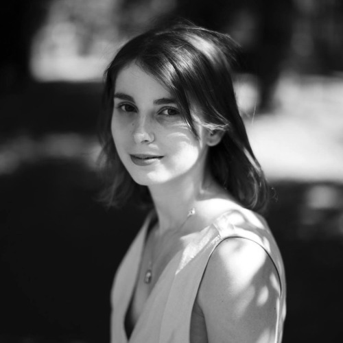

+About Me
Hello, I’m Amy.

I like making films.
Dance films, short films, documentaries….I am still waiting on that feature film or music video. I can dream.
I moved to the depths of South East London, in 2015. Where I tried my luck as a dancer at Laban. I broke the rules, and ended up making films instead of attending class. Which landed me at Goldsmiths making documentary films on a Visual Anthropology degree.
Currently in my second year, still owning my craft and figuring myself out like every 20 something in London. In 2018 my film ‘Longo’ was featured on Nowness Picks, and in 2018 I was lucky enough to work under the director Oscar Hudson on the production of Loyle Carner’s new video ‘Ottolenghi’.
Then I realised I wanted to be a director… a female director in 2018. I can still dream.
Currently making a short about a man with a love of fish.